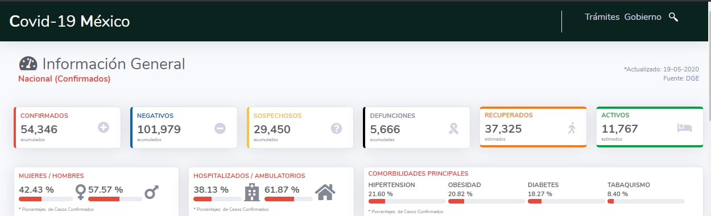

Mexico con COVID-19?
El Gobierno de la Ciudad de México dio a conocer el informe diario de la situación de la emergencia sanitaria de COVID-19 en la capital.
Se registran 15 mil 283 casos confirmados acumulados, 717 más que ayer. Hay 3 mil 32 casos confirmados activos, 74 más que ayer. Hay 6 mil 973 casos sospechosos, 837 nuevos casos con respecto a las últimas 24 horas.
Finalmente, se registran mil 452 defunciones por COVID-19, 71 más que ayer.
En la liga de abajo se puede consultar el número de personas atendidas vía el sistema SMS, la disponibilidad de camas en los hospitales de la ciudad, además de las variaciones de la movilidad.
Estadisticas en Mexico

Has click en este sitio para mas informacion